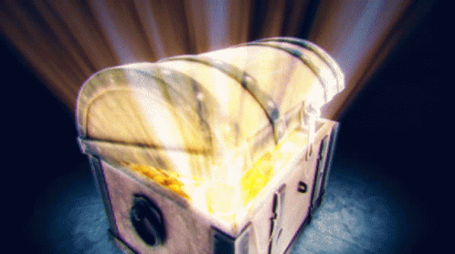

The witch presents you with the treasure box, her face twisted in a mixture of defeat and anger. You take out the key you had obtained from solving the riddle and insert it into the lock. With a satisfying click, the chest unlocks, and you slowly lift the lid, revealing a dazzling array of jewels, gold coins, and precious artifacts.
As you reach into the chest, you can't help but feel a sense of overwhelming pride and joy. You had overcome every obstacle and danger thrown your way, and now the treasure was finally yours.
But just as you begin to revel in your newfound wealth, a voice suddenly interrupts your thoughts. It is the same mysterious voice that had guided you to the witch's house. "Congratulations, brave one," it says. "You have defeated the witch and claimed your rightful treasure. But your journey is far from over."
Confused, you turn around to see that the witch has vanished, leaving behind only a trail of smoke. The voice continues, "You must now embark on a new quest, one that will test your courage, wit, and strength. Will you accept the challenge?"
Without hesitation, you respond with a resounding "yes." You had come too far to turn back now, and the promise of adventure and new treasures was too enticing to resist.
With that, the voice fades away, leaving you to ponder what challenges lay ahead. But for now, you hold the treasure chest close to your chest, feeling grateful for the trials that had led you to this moment, and eager to set off on your next adventure.
